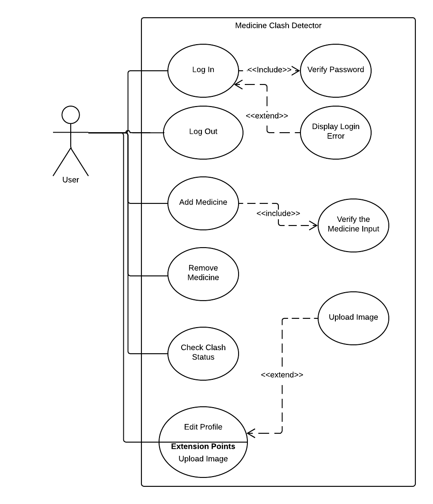

for
Medicine Clash Detector
Prepared by "TEAM: 2"
Medicine Clash Detector
Date:8th October 2018
REVISION HISTORY
| Name | Date | Reason For Changes | Version |
1. Introduction
1.1 Purpose
This purpose of this product is to build a system that will be able to detect if there are any clash among the medicines the user is taking and it will alert the user accordingly.
1.2 Document Conventions
This document follows MLA Format. Bold-faced text has been used to emphasize section and sub-section headings. Highlighting is to point out words in the glossary and italicized text is used to label and recognize diagrams.
1.3 Intended Audience and Reading Suggestions
This document is intended for project manager who will be supervising this product and the users and developers. This SRS is divided into five modules and second module will discuss about the description of the product, how this product functions and how the system will be able to interact with the users And the third module will discuss about the various interfaces that will be used by the system. And fourth module will only discuss elaborately about the system features. And the last module will illustrate about the nonfunctional requirements which a user won’t be able to see. And it is advised to read this SRS as per the table of contents.
1.4 Product Scope
Now a day's people takes lots of medicines as they are prescribed by different doctors but these drugs can interact with each other in harmful manner and cause health damage. This software will be able to identify those drugs with the help of an image of the drugs and also by text input name of the drugs by the user. And by this way this software will reduce medication clashing risk. Though we will be consulting medical literatures for building this system yet we highly recommend to consult with respective physicians about this if any alert occurs.
1.5 References
Please consult the attached project scope document for further information regarding project scope. A use case diagram has been attached to accompany sections 3.1. A user manual is included to accompany section 2.6: User Documentation. Product mock-ups and Requirements Validation Plan have also been included for general reference.
2. Description Overall
2.1 Product Perspective
This software product is being developed for the patients; keeping in mind the situation of Bangladesh. In our country most of the people go to the doctors however they like. This causes a problem which is, the doctors who are prescribing the medicines for the same patient do not have any idea what the others doctors have prescribed. As a result there could be prescribed medicines which could clash with each other. This could be fatal. Our goal is to solve this problem. We will have application both for Android and iOS platforms. Our application will alert users if they are taking medicines which could clash with each other.
2.2 Product Functions
Medicine Clash Detector features:
- Holds all the record of the medicines the user is taking.
- Capture image to add new medicine/s.
- Add medicine option by typing.
- Users can remove medicines if they want.
- Fully functional offline use.
- Users can delete his/her account.
2.3 User Classes and Characteristics
We only have patients or the users in our system. They will register in the system and login to update their medicine history. They system will be implemented that way so that no duplicate email or id is granted. So no need for any admin to maintain the user accounts. Users will have the authority to delete their own account.
2.4 Operating Environment
Our applications will run on both Android and iOS platform.
2.5 Design and Implementation Constraint
This is a moduler system and it might need to be change as the client asks. The constraint is the client demands.
2.6 User Documentation
For user documentation and information, please consult section 4: External Interface Requirements and attached user manual.
2.7 Assumptions and Dependencies
We will not have any online dependencies other that downloading the app. We want the database for the app to be saved in the phone and we do not want to keep and online database.
3. External Interface Requirements
3.1 User Interfaces
The Medicine Clash Detector user interface has been specifically designed with their customers in mind, giving them convenience while they transaction. The home screen offers a menu.The user can select one of the options on the menu, and is taken to the respective screen. Every screen displays respective feature button/s.The user can click on any one of the options and is taken to the screen of their choice. In addition, clicking on the login button displays the login window. This project offers easy click options to navigate the screens efficiently.



3.2 Software Interfaces
The Medicine Clash Detector runs on Android and iOS. The reason for the choice of the OS is due to the popular smart phone models' usage of these OS. The Medicine Clash Detector features User Friendly Software Interface that makes it convenient to use. The Medicine Clash is planned to use offline.That helps users to get updated always at anytime anywhere. The device and the Server contains an in-built language database containing the list of the medicines the user is taking.
3.3 Communications Interfaces
Users just need to have a smart phone to use this product.
4.System Features
4.1 Create new account
Use Case name: Create AccountActor:User
Type: Primary
| Actor Actions | System Response |
|---|---|
| Include login | |
| 1. When clicking On "New User" | 2. A Create Account Form will be shown |
| 3. After fill out the form and clicking Submit Button or choosing between Google account or Facebook | 4. A confirmation mail will be sent |
| 5. If user confirms | 6. Account Will be Created successfully |
| 7. If Press "No" | 8. System will be in the same account form |
Alternative cause of action:
- 4.1.1 If system find that it has already account with the same username, it will show an error message
4.2 Delete Account
Use Case name: Delete AccountActor: User
Type: Primary
| Actor Actions | System Response |
|---|---|
| Include login | |
| 1.If click on Delete Account menu | 2.A new page will come with a Delete Account Button on it |
| 3.If the button is clicked | 4.System will delete the corresponding account |
4.3 Login
Use Case name: LoginActor: User
Type: Primary
| Actor Actions | System Response |
|---|---|
| 1.Open up the app without any account logged in | 2.The default page will be asking for email and password |
| 3.After giving all credentials and clicking the login button | 4.A page with option buttons will be served |
Alternative cause of action:
- 4.3.1 If the password or username is wrong or doesn't exist,then 'Wrong Credential' message will be shown
4.4 Logout
Use Casename: LogoutActor: User
Type: Primary
| Actor Actions | System Response |
|---|---|
| Include login | |
| 1.After clicking "Logout" option | 2.The user will be logged out and the login page will be shown again |
4.5 Add Medicine
Use Casename: Add MedicineActor: User
Type: Primary
| Actor Actions | System Response |
|---|---|
| Include login | |
| 1.Press the add medicine option | 2.A menu with two options 'Take Photo' and 'Type the Medicine name' will appear |
| 3.If take photo is clicked | 4.Camera will be accessed and will ask the user to tap on the screen to focus on the medicine name |
| 5.Tapping and focusing on the medicine name | 6.Picture of the medicine name would be taken and converted in to text a page "With take more photo will appear" |
| 7.If pressed yes | 8.Camera will be again accessed and will ask the user to tap on the screen to focus on the medicine name again |
Alternative course of action:
- 4.5.1 If user press 'Type the Medicine name' the app will ask the user to type the name of the medicine to add
4.6 Delete Medicine
Use Casename: Delete MedicineActor: User
Type: Primary
| Actor Actions | System Response |
|---|---|
| Include login | |
| 1.Press the Delete Medicine option | 2.A menu will appear with the names of the medicines the user is taking with cross icon on the right side of them |
| 3.If user cross any medicine | 4.System will remove the medicine from the list |
4.7 Status
Use Casename: StatusActor: User
Type: Primary
| Actor Actions | System Response |
|---|---|
| Include login | |
| 1. Press the Status option | 2. A menu will appear with the names of the medicines the user is taking those have clash among them |
5.Other Nonfunctional Requirements
5.1 Performance Requirements
The response time for adding a new medicine through typing text or image to text method should not take more than 10 seconds.
5.2 Safety Requirements
No specific safety requirement is necessary for the application.
5.3 Security Requirements
In order to ensure that users private data such as their personal informations, the medicines they take remain safe; the following strategies can be adopted:
- Keeping all users informations in the server as encrypted
- Ensuring https protocol for all network connections
5.4 Software Quality Attributes
- Flexibility
- Testability
- Usability
The system is flexible and can be pivoted to adapt to different environment and situations in order to face changes related to business environment policies and rules. .
The system is required to have good testability so that it is easy to create test criteria for the system and its component. The tests should be easily executable to determine if the criteria are met.
As the system is easy to handle and navigates in the most expected way with no delays. In that case the system program reacts accordingly and transverses quickly between its states.
5.5 Business Rules
N/A
6. Other Requirements
Appendix A: Glossary
Appendix B: Analysis Models
N/A
{kind=link}